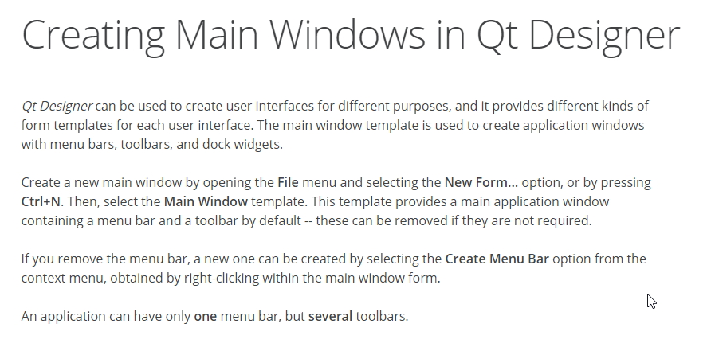
Python minimum examples created by me by using Pycharm Editor and its project system. I will explain some elementary project wit PyQt4 GUI. First project is AutoDisplay_1.0.0.1 . Here we just created a sample program with a main window and menu bar and a tool bar. We implemented SVG Icons for toolbar buttons. The SVG files are downloaded from Here. There are more free SVGs there. In
import copy
import sys
import os
import time
import re
import pickle #for saving the file
from PyQt4 import QtCore, QtGui
from PyQt4 import QtSvg
from PyQt4.QtGui import QApplication, QDialog, QMainWindow, QActionGroup
from PyQt4.QtGui import QPrinter, QPainter
from PyQt4.QtCore import Qt
from PyQt4.Qt import QFont
from PyQt4.Qt import QString
from PyQt4.Qt import QStringList
try:
_fromUtf8 = QtCore.QString.fromUtf8
except AttributeError:
_fromUtf8 = lambda s: s
class mainWindowUI(QMainWindow):#mainwindow inheriting from QMainWindow here.
def __init__(self):
QDialog.__init__(self)
We just import some libraries not all of them are usefull right now and just created a class and its constructor.
Now I will create a
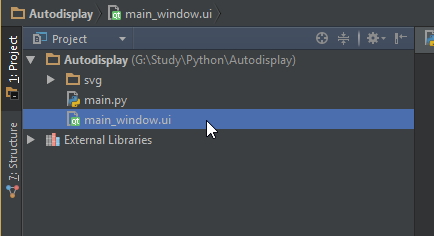
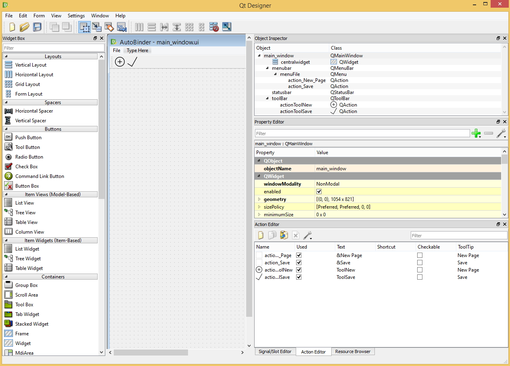
To add a toolbar, right click on the main window as follows and add toolbar..
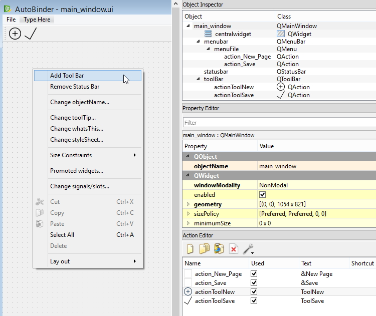
Use the action editor to add / remove tool buttons as follows::
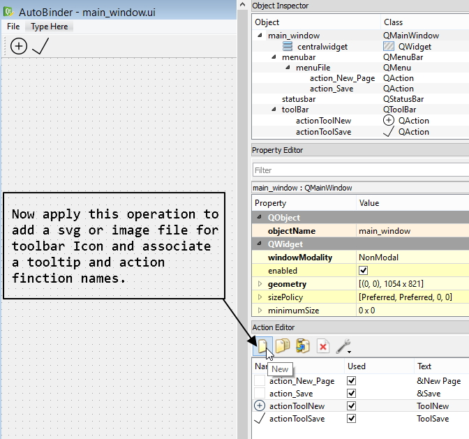
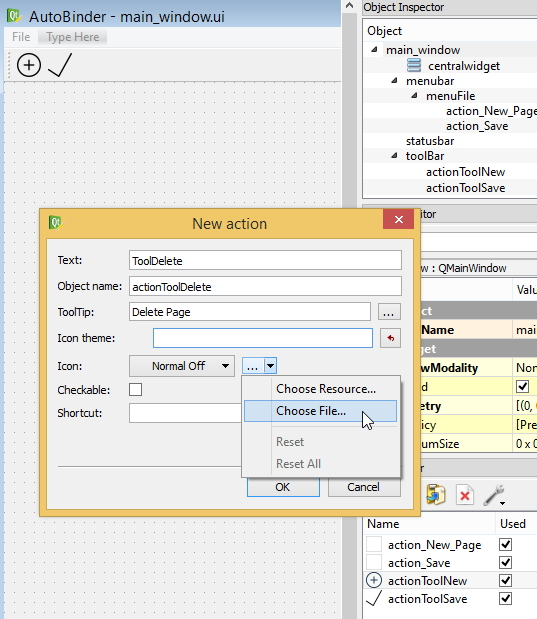
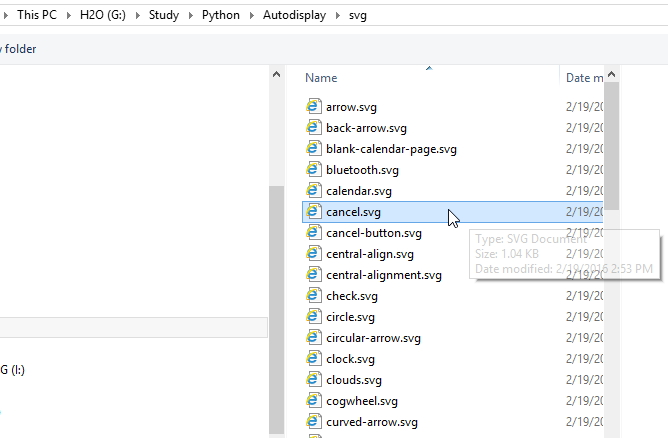
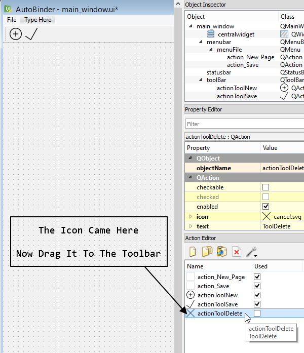
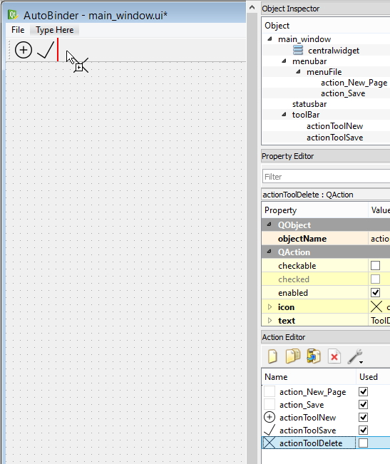
We need to convert this ui file to python file by command line as follows::
This command will generate a Python file with a class inside named:
....
....
....
from main_window import Ui_main_window
try:
_fromUtf8 = QtCore.QString.fromUtf8
except AttributeError:
_fromUtf8 = lambda s: s
class mainWindowUI(QMainWindow):#mainwindow inheriting from QMainWindow here.
def __init__(self):
QDialog.__init__(self)
self.ui = Ui_main_window()
self.ui.setupUi(self)
if __name__=='__main__':
app = QApplication(sys.argv)#makes a QtGui thing
window = mainWindowUI()
window.show()
sys.exit(app.exec_())
Thats it, Running the program will show the window designed in
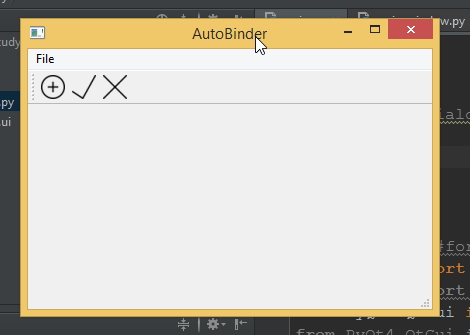
Toolbar Button Click Action
The final generated file Note that in QT Designer generated file, all the UI elements are declared and created in
self.action_New_Page = QtGui.QAction(main_window)
self.action_New_Page.setObjectName(_fromUtf8("action_New_Page"))
self.action_Save = QtGui.QAction(main_window)
self.action_Save.setObjectName(_fromUtf8("action_Save"))
self.actionToolNew = QtGui.QAction(main_window)
icon = QtGui.QIcon()
icon.addPixmap(QtGui.QPixmap(_fromUtf8("svg/plus-button.svg")), QtGui.QIcon.Normal, QtGui.QIcon.On)
self.actionToolNew.setIcon(icon)
self.actionToolNew.setObjectName(_fromUtf8("actionToolNew"))
self.actionToolSave = QtGui.QAction(main_window)
icon1 = QtGui.QIcon()
icon1.addPixmap(QtGui.QPixmap(_fromUtf8("svg/check.svg")), QtGui.QIcon.Normal, QtGui.QIcon.Off)
UI programming uses a concept here with PyQt4. The generated python file from UI file is a class that act like a configurator. Passing an appropriate QT GUI object to the configurator will prepare that object with UI elements and other UI related informations. Then call the
Here is the function that shows the dialog box designed in th
def showSampleDialog(self, strMsg):
diag = QtGui.QDialog()
ui = Ui_sampleDiag()
ui.setupUi(diag)
diag.exec_()
Here we created an object of
The
Another issue is handling button click signals. We created a function similar to
def signalConnection(self):
self.connect(self.ui.actionToolNew, QtCore.SIGNAL("triggered()"), lambda: self.showSampleDialog("sample text"))
Here we see that, Signal is mentioned as
Tutorial in Zetcode uses raw coding rather than QT Designer Ui Concept. Only the approches are different but the operations are similar. We will analyze the
import sys
from PyQt4 import QtGui
class Example(QtGui.QMainWindow):
def __init__(self):
super(Example, self).__init__()
self.initUI()
def initUI(self):
exitAction = QtGui.QAction(QtGui.QIcon('exit.png'), '&Exit', self)
exitAction.setShortcut('Ctrl+Q')
exitAction.setStatusTip('Exit application')
exitAction.triggered.connect(QtGui.qApp.quit)
self.statusBar()
menubar = self.menuBar()
fileMenu = menubar.addMenu('&File')
fileMenu.addAction(exitAction)
self.setGeometry(300, 300, 300, 200)
self.setWindowTitle('Menubar')
self.show()
def main():
app = QtGui.QApplication(sys.argv)
ex = Example()
sys.exit(app.exec_())
if __name__ == '__main__':
main()
Code is straight forward here. The QT Designer Code generator uses more nested calls and more functions to do this job. But the operations are same. The function
def signalConnection(self):
#self.connect(self.ui.actionToolNew, QtCore.SIGNAL("triggered()"), lambda: self.showSampleDialog())
self.ui.actionToolNew.triggered.connect(self.showSampleDialog)
Here I did desable the previous connection code and applied the To apply Menu system, Sequentially create:
As the example from zetcode did. Finally creates the
self.menuFile.addAction(self.action_New_Page)
self.menuFile.addAction(self.action_Save)
self.menubar.addAction(self.menuFile.menuAction())
The third line of this code does add a manu in the menubar. In case of raw code, it was just straight forward to add a menu. It is just like as:
fileMenu = menubar.addMenu('&File')
The QT Designer UI Code generator does some extra function calls differently and also declares more objects, but it does this thing for make it reconfigurable. User does not need to code inside the UI File, so we can change the user interface whenever we wants. Just need to follow the way UI files and classes are connected to user code. We need to understand how we should write user application code to make the UI flexible.
class mainWindowUI(QMainWindow):#mainwindow inheriting from QMainWindow here.
def __init__(self):
super(mainWindowUI, self).__init__()
#QDialog.__init__(self)
self.ui = Ui_main_window()
self.ui.setupUi(self)
self.signalConnection()
self.statusBar().showMessage('Ready')
This class is inerited from
After these steps we can further modify or make addition to the UI by accessing the
Get back here later ......................
Energypac Project - CSV File Manipulation
We are making step by step try and test basis project development. Last saved project First we are opening a file with
def showOpenFileDialog(self):
#open_dialog = QtGui.QFileDialog()
#open_dialog.getOpenFileNameAndFilter(self, 'Open File', '*.csv')
fname = QtGui.QFileDialog.getOpenFileNameAndFilter(self, 'Open file', '.', '*.py')
self.statusBar().showMessage(fname[0]+' -- '+fname[1])
This code will show the OpenFileDialog in the present execution folder and shows only *.py files.
get started with csv file tutorial video in python video files. first import csv module, open the desired csv file, use csv.reader(..) function to get a multidimentional array. observe the syntex, used to get data from array. out = [row for row in out], this kind of syndex is used in that tutorial.
PIP INSTALL
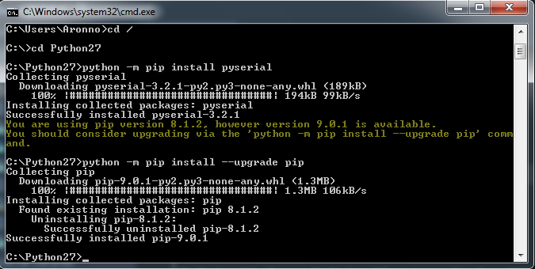
python -m pip install esptoolSimple Thread in PyQt (Pyduino_0.0.0.2)
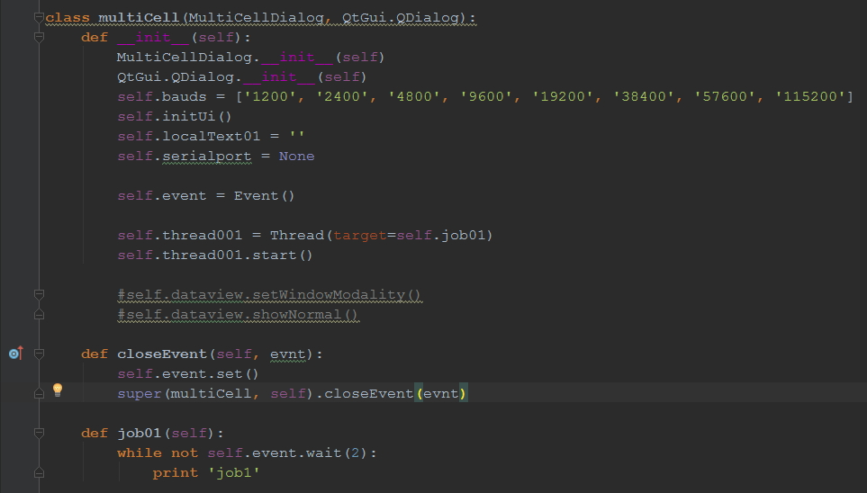
We also override an virtual event function
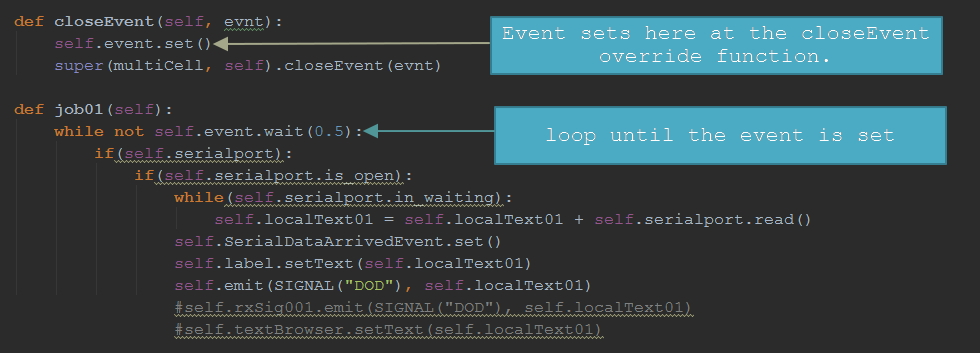
Emit Signal With Argument
Following example from blog http://www.saltycrane.com/blog/2008/01/pyqt-how-to-pass-arguments-while/ shows on how to emit signal with arguments::
import sys
import time
from PyQt4.QtCore import *
from PyQt4.QtGui import *
####################################################################
class MyWindow(QWidget):
def __init__(self, *args):
QWidget.__init__(self, *args)
self.label = QLabel(" ")
layout = QVBoxLayout()
layout.addWidget(self.label)
self.setLayout(layout)
self.connect(self, SIGNAL("didSomething"),
self.update_label)
self.do_something()
def do_something(self):
self.emit(SIGNAL("didSomething"), "important", "information")
def update_label(self, value1, value2):
self.label.setText(value1 + " " + value2)
####################################################################
if __name__ == "__main__":
app = QApplication(sys.argv)
w = MyWindow()
w.show()
sys.exit(app.exec_())
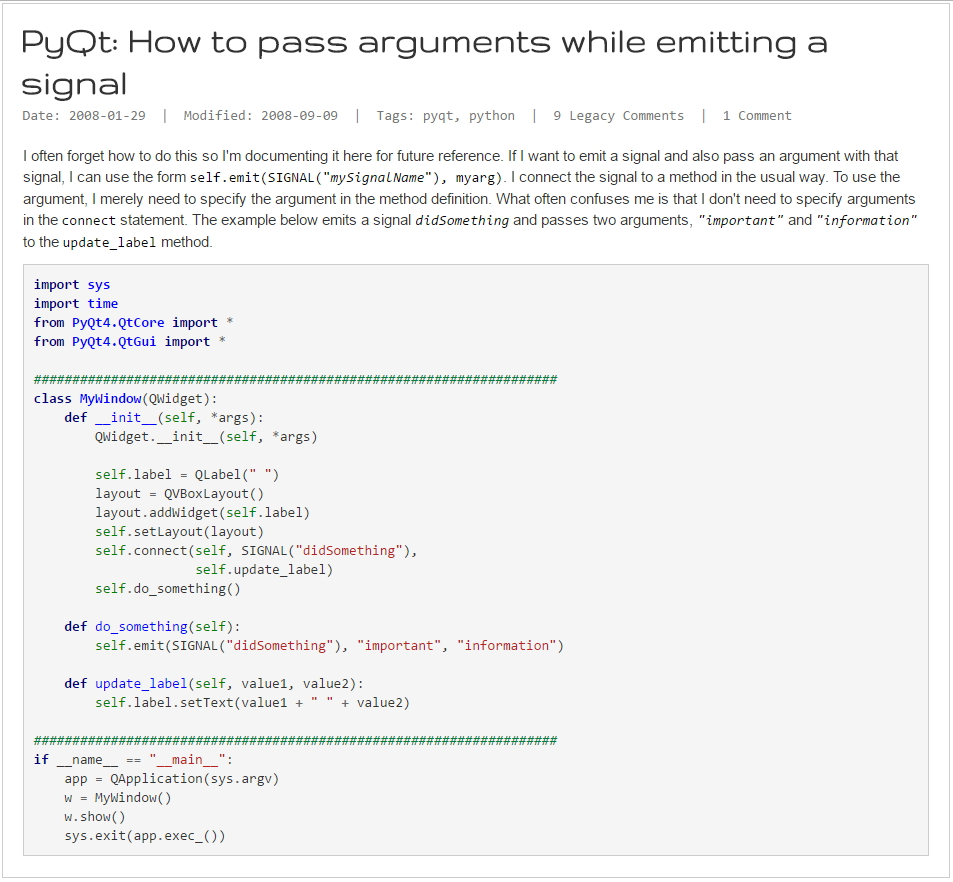
From this concept we did transfer the received Rx data from the thread to a slot function to display the data to the UI.
PyQt4 Table View
Open the example file
class MyTableModel(QAbstractTableModel):
"""
keep the method names
they are an integral part of the model
"""
def __init__(self, parent, mylist, header, *args):
QAbstractTableModel.__init__(self, parent, *args)
self.mylist = mylist
self.header = header
def rowCount(self, parent):
return len(self.mylist)
def columnCount(self, parent):
return len(self.mylist[0])
def data(self, index, role):
if not index.isValid():
return None
elif role != Qt.DisplayRole:
return None
return self.mylist[index.row()][index.column()]
def headerData(self, col, orientation, role):
if orientation == Qt.Horizontal and role == Qt.DisplayRole:
return self.header[col]
return None
def sort(self, col, order):
"""sort table by given column number col"""
self.emit(SIGNAL("layoutAboutToBeChanged()"))
self.mylist = sorted(self.mylist,
key=operator.itemgetter(col))
if order == Qt.DescendingOrder:
self.mylist.reverse()
self.emit(SIGNAL("layoutChanged()"))
There are virtual functions thats why the comments on the beginning says to keep the function names intact.
This programming style is called MVC style coding. QT supplied the UI parts with MVC support, like:
Python + sqlite3 + Linux
We are trying to setup python and database with sqlite3 and apply some operation on linux. This articles is directed from Installing::
type
Then type
After installing these packages check them from inside python shell::
rock@rabian-rock-pro:~$ python
Python 2.7.9 (default, Mar 1 2015, 13:48:22)
[GCC 4.9.2] on linux2
Type "help", "copyright", "credits" or "license" for more information.
>>> import sqlite3
>>> sqlite3.version
'2.6.0'
>>> sqlite3.sqlite_version
'3.8.7.1'
>>>

The python-sqlite tutorial came from Zetcode.
Automate Boring Stuff
We did some regular expression experiments in IDLE terminal. The rule is to look for function with parameter list. The experiment is saved as 
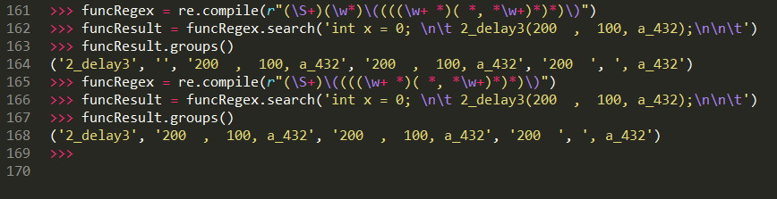
In Chapter 7
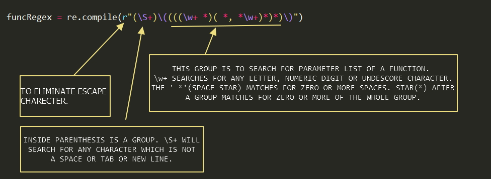
Lets examine a function searcing pattern.
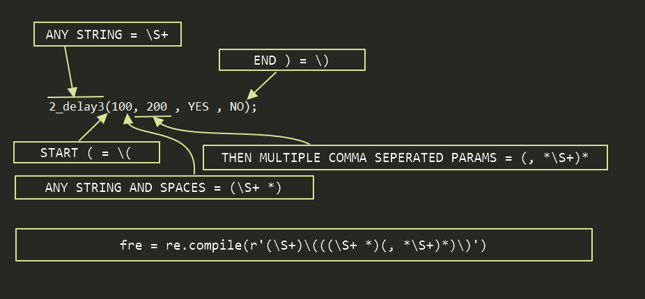
A simple code generator using regex.
import re
def main():
uid_regex = re.compile(r'(\w+)*-(\w+)*-(\w+)*-(\w+)*-(\w+)*-(\w+)*')
id_col = uid_regex.search('FF33-5D9-4132-3531-4964-4324')
#print(id_col.groups()[0])
print('if((encrypt[0] != 0x'+id_col.groups()[0]+') || (encrypt[1] != 0x0'+id_col.groups()[1]+') || (encrypt[2] != 0x'+id_col.groups()[2]+') || (encrypt[3] != 0x'+id_col.groups()[3]+') || (encrypt[4] != 0x'+id_col.groups()[4]+') || (encrypt[5] != 0x'+id_col.groups()[5]+'))')
if __name__ == '__main__':
main()
A Read Modify Right File Operation to edit a C File at a specific line:
import re
import sys
def main():
uid_regex = re.compile(r'(\w+)*-(\w+)*-(\w+)*-(\w+)*-(\w+)*-(\w+)*')
id_col = uid_regex.search('FF34-5DB-5431-3636-5922-4310')
#print(id_col.groups()[0])
#print('if((encrypt[0] != 0x'+id_col.groups()[0]+') || (encrypt[1] != 0x0'+id_col.groups()[1]+') || (encrypt[2] != 0x'+id_col.groups()[2]+') || (encrypt[3] != 0x'+id_col.groups()[3]+') || (encrypt[4] != 0x'+id_col.groups()[4]+') || (encrypt[5] != 0x'+id_col.groups()[5]+'))')
newline = 'if((encrypt[0] != 0x'+id_col.groups()[0]+') || (encrypt[1] != 0x0'+id_col.groups()[1]+') || (encrypt[2] != 0x'+id_col.groups()[2]+') || (encrypt[3] != 0x'+id_col.groups()[3]+') || (encrypt[4] != 0x'+id_col.groups()[4]+') || (encrypt[5] != 0x'+id_col.groups()[5]+'))'
idx = 0
with open('main1.c', 'r') as f:
txt = f.readlines()
f.close()
with open('main1.c', 'w') as f:
txt[495] = '\t' + newline + '\n' #Change the contents of line 496
f.writelines(txt)
f.close()
if __name__ == '__main__':
main()